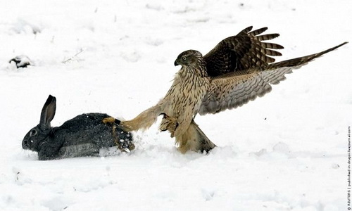

Como ya hemos dicho en el apartado de las características morfológicas del águila real, éste ave está dotada de un pico y unas patas con fuertes garras que en principio, le sirven para alimentarse. Ayudado por la velocidad que tiene para volar de un lado para otro y la aguda visión con la que supervisa a su presa, éste animal es capaz de todo aquello que se proponga.
Las patas son muy consistentes y tienen una fuerza extrema a la hora de agarrar cualquier animal que se le presente. La presión que hacen las garras que tiene en las mismas y el pico del que está dotado son sus herramientas principales a la hora de cazar para alimentarse.
Tal vez estemos ante el águila con la dieta más variada que existe. El águila real puede alimentarse de más de 190 tipos de mamíferos. Naturalmente, cazará y comerá las presas de las que tenga mayor disponibilidad y facilidad para acceder a ellas.
Entre muchísimos otros, come animales como las cabras, ovejas, ratones, conejos, ciervos, marmotas, liebres, ardillas, zorros, musarañas, antílopes e incluso las crías de otros tipos de águilas.